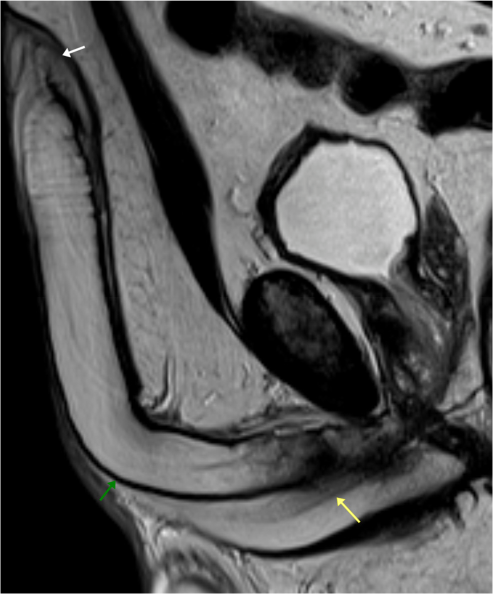
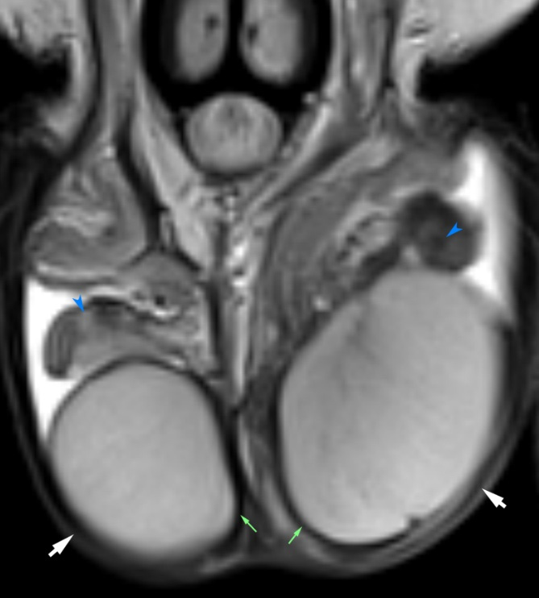

Penile and scrotal tissue relationships
Two source-labelled T2-weighted MRI fields show regional structures. These static clinical illustrations are separate source panels; their patient linkage is unreported, and they do not form a registered whole-organ journey.
Penile field · source Figure 1(a)

Scrotal field · source Figure 2(a)

The review describes positioning that can straighten and secure the penis against the abdomen. Exact preparation and any pharmacological erection for this pictured case are unreported. The displayed posture is not itself evidence of an erection. Patient ages and linkage between the two fields are also unreported.
Regent, Nowak, Skrobisz, Matuszewski and Studniarek (2025), MRI of the Scrotum and Penis: Current Applications and Clinical Relevance, Diagnostics 15:3134, Figures 1(a) and 2(a). © Authors; CC BY 4.0. Penile panel reconstructed by exact stacking of its two contiguous source PDF image tiles; scrotal panel retains the original JPEG bytes. No interpolation, retouch, colour change, new leader or scale. Source and exact extraction record · Reproduction record.